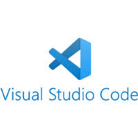
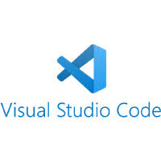

Phone: +966501694123, Email: saud.aldajani8@gmail.com, LinkedIn: https://www.linkedin.com/in/saud-aldajani/, GitHub: https://github.com/SaudAldajani

 



As a software engineer, I design and develop high-quality software using best practices and the latest technologies. I work with databases, APIs, and other technologies to create robust software solutions that are scalable, maintainable, and secure. I also collaborate with other teams to integrate software solutions with other systems and applications.
I am passionate about software development and continuously learning new skills and technologies. I have completed multiple certifications in PERN, and Python, and participated in various hackathons and competitions, where I achieved impressive results.
I am looking for opportunities to help businesses grow as a software engineer, through contributing to building scalable and cutting-edge software. I am also interested in exploring new domains and challenges, and applying my skills and knowledge to create innovative and impactful solutions.